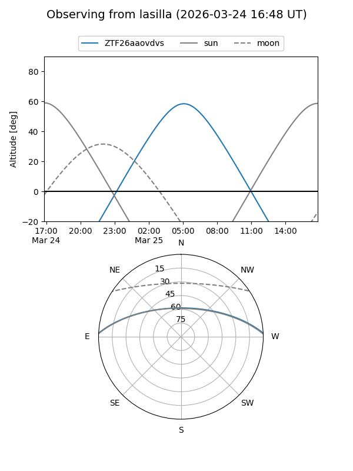
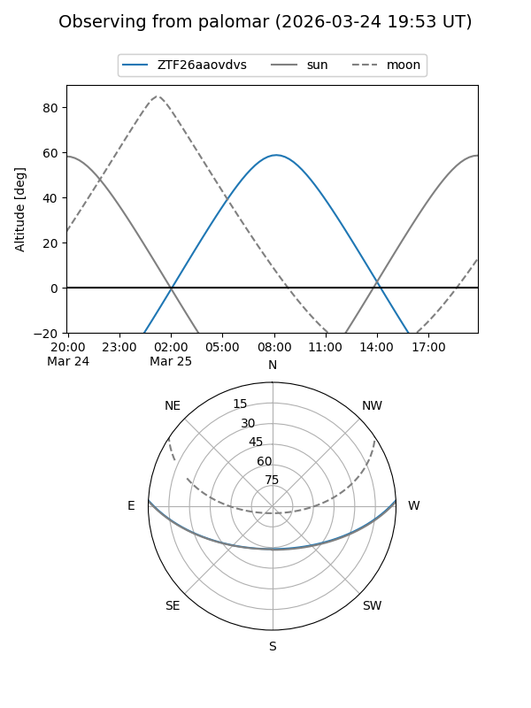

ZTF26aaovdvs
Target ZTF26aaovdvs at 2026-03-25 09:12
Aliases and brokers:
FINK: link
Lasair: link
ALeRCE: link
alt names
ZTF26aaovdvs (ztf,fink_ztf)
Coordinates:
equatorial (ra, dec) = 187.6697,+2.38117
equatorial (HMS+DMS) = 12:30:40.72,+02:22:52.21
galactic (l, b) = (290.6960,+64.75860)
Flags:
Photometry:
last ztfg=17.74, ztfr=15.44
1 ztfg, 1 ztfr detections
Lightcurve
Visibility


Additional plots